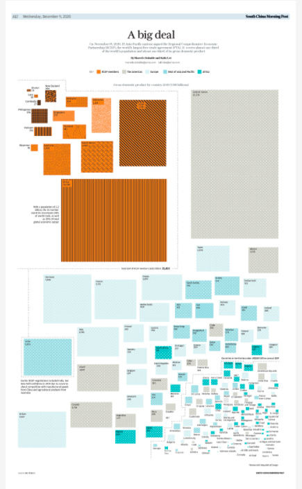

Gráficos figurativos
Los gráficos figurativos son aquellos que representan fenómenos físicos; en ellos generalmente existe una cierta similitud entre lo representado y la forma visual (Cairo, 2011:31).
Tradition or exploitation?
Publicado en South China Morning Post..
The slave trade
Publicado en South China Morning Post..
The final mission
Publicado en South China Morning Post..
They are very close ... and you can't escape them
Publicado en South China Morning Post..
Gráficos no figurativos
Los gráficos no figurativos no se basan en una semejanza física, sino en una “convención”, una especie de acuerdo tácito entre quien comunica y quien recibe el mensaje (Cairo, 2011:33).

A big deal
Publicado en South China Morning Post..
How China invests in America
Publicado en South China Morning Post..
Big drop in US visas for mainland Chinese students
Publicado en South China Morning Post..
Testing for Covid-19
Publicado en South China Morning Post..